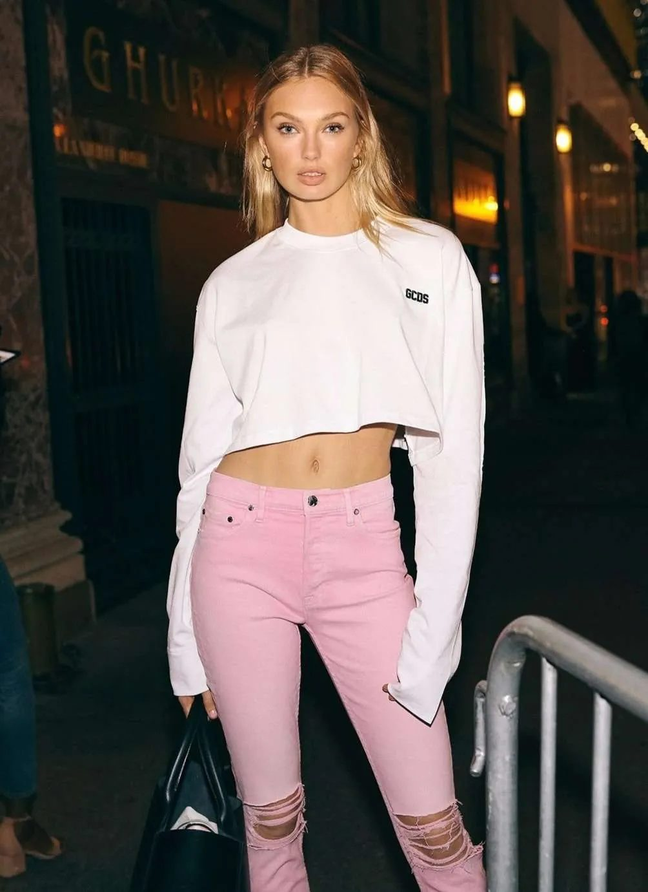
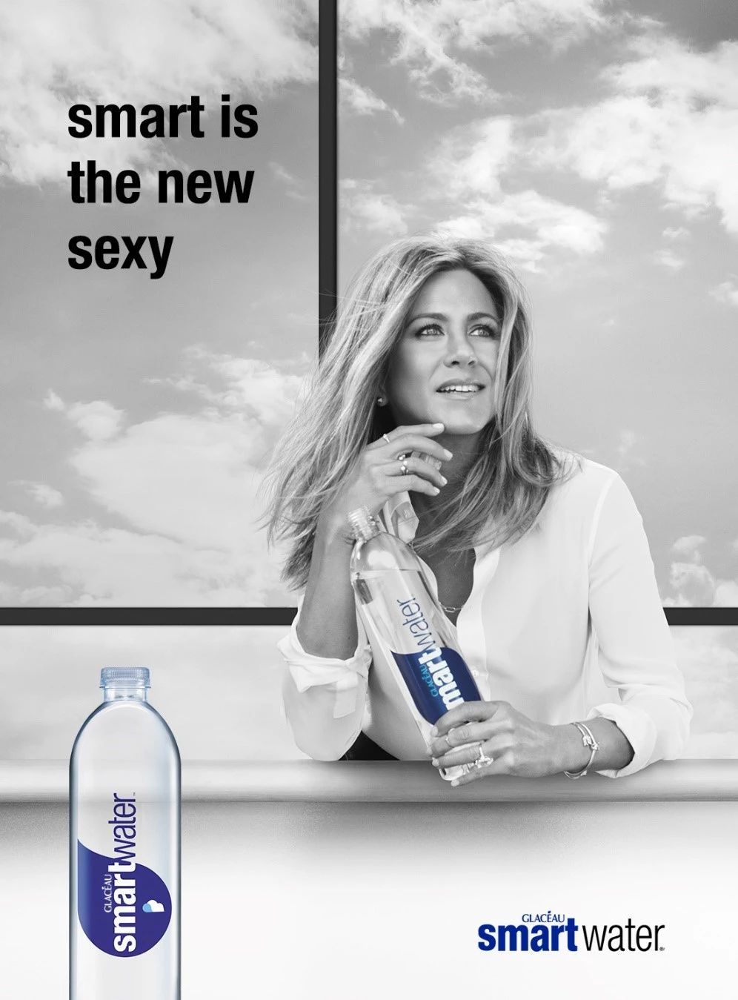

Utvalgte oppgaver fra arkivet
SALO har gjennom årene jobbet med PR, rådgivning, innhold, tekst, design, rapporter, kampanjer og redaksjonelle konsepter for norske virksomheter og internasjonale merkevarer. Her viser vi et utvalg oppgaver, med vekt på hva kunden trengte, hva SALO gjorde og hvilken verdi arbeidet skapte.
Arkivet
Filtrer

01
Merkevare, sport — Strategisk rådgivning, PR og mediearbeid, Merkevare og kampanje

02
Mote, egeneid — Merkevare og kampanje, Design og visuell kommunikasjon, PR og mediearbeid

03
Merkevare, forbruker — PR og mediearbeid, Innholdsproduksjon, Merkevare og kampanje

04
TV og strømming — Strategisk rådgivning, PR og mediearbeid, Tekst og redaksjonelt

05
Digital markedsplass — Innholdsproduksjon, Tekst og redaksjonelt

06
Handel, samfunn — Strategisk rådgivning, PR og mediearbeid, Bærekraft og rapportering

07
Servering, forbruker — Tekst og redaksjonelt, Design og visuell kommunikasjon, Bærekraft og rapportering

08
Kultur, egeneid — Tekst og redaksjonelt, Design og visuell kommunikasjon, Merkevare og kampanje
01Merkevare, sportStrategisk rådgivning, PR og mediearbeid, Merkevare og kampanje↗
02Mote, egeneidMerkevare og kampanje, Design og visuell kommunikasjon, PR og mediearbeid↗
03Merkevare, forbrukerPR og mediearbeid, Innholdsproduksjon, Merkevare og kampanje↗
04TV og strømmingStrategisk rådgivning, PR og mediearbeid, Tekst og redaksjonelt↗
05Digital markedsplassInnholdsproduksjon, Tekst og redaksjonelt↗
06Handel, samfunnStrategisk rådgivning, PR og mediearbeid, Bærekraft og rapportering↗
07Servering, forbrukerTekst og redaksjonelt, Design og visuell kommunikasjon, Bærekraft og rapportering↗
08Kultur, egeneidTekst og redaksjonelt, Design og visuell kommunikasjon, Merkevare og kampanje↗
Trenger du et erfarent blikk på en kommunikasjonsutfordring, eller noen som kan få arbeidet ferdig?
Ta kontakt med oss, så finner vi tid for et effektivt arbeidsmøte.
post@salokommunikasjon.no